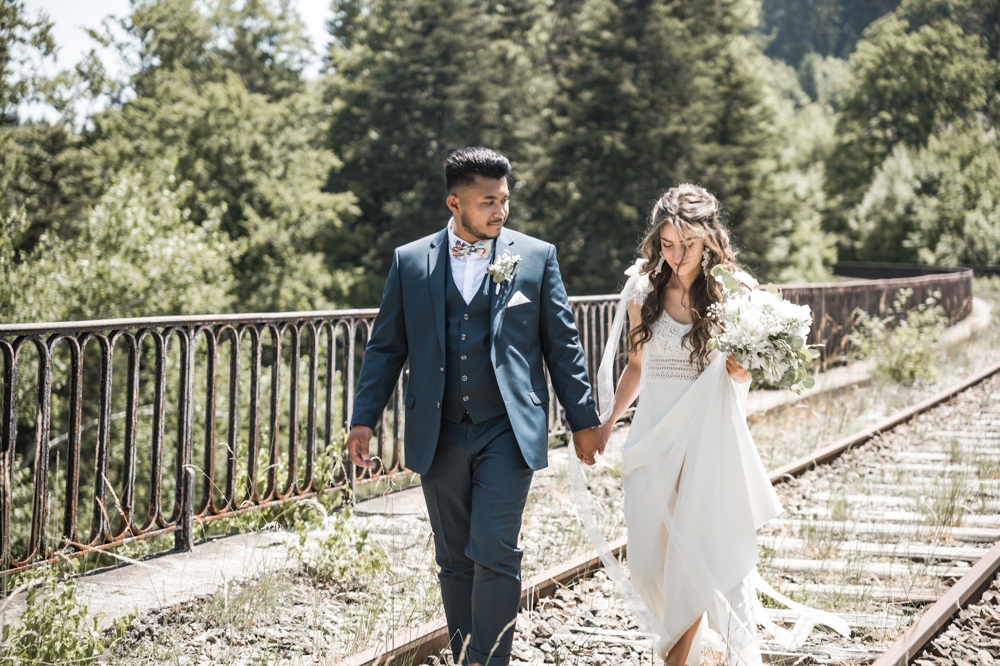
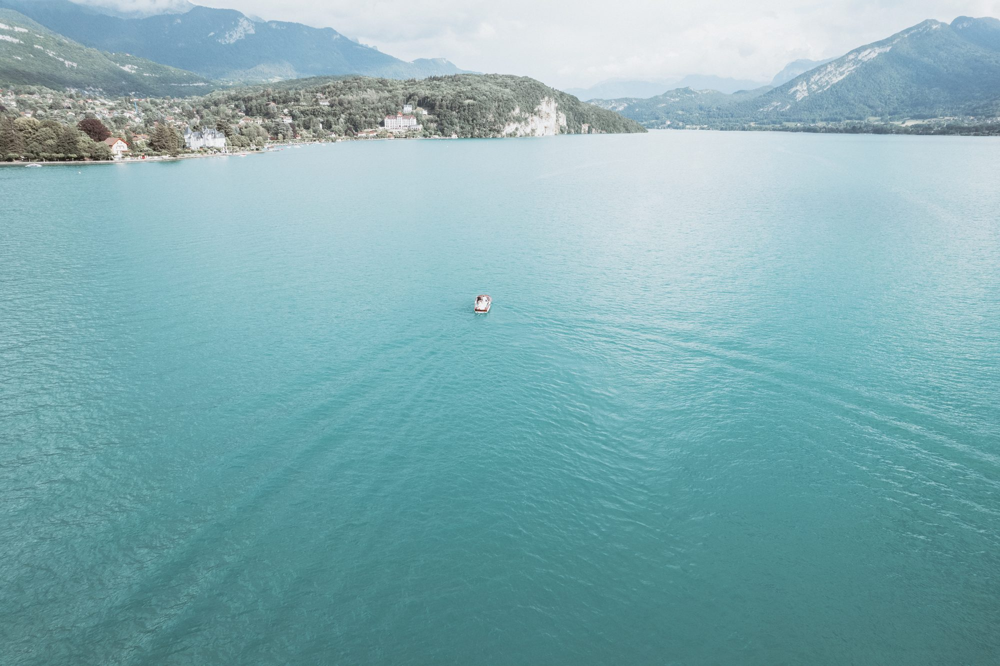

Wedding photographer and videographer in Lyon, France: a guide for couples getting married in France
Lyon sits at the crossroads of everything couples love about France: food, vineyards, old stone, and the Alps a short drive away. If you are planning a wedding here, whether you live around the corner or on another continent, this is what I would tell a friend looking for a photographer.

Why so many couples choose Lyon and south-east France
Lyon is France’s capital of gastronomy, with a UNESCO-listed old town, Renaissance courtyards and two rivers running through it. Within an hour you reach the golden-stone villages of the Beaujolais, chateaux and country estates. The lakes and mountains of the French Alps and the lavender fields of Provence are an easy drive away.
For international guests, Lyon is simple to reach: it has an international airport and high-speed trains to Paris and the south of France.
My approach: unobtrusive, then hands-on
For most of the day, I stay out of the way. Getting ready, the ceremony, the hugs afterwards: none of that can be staged, so I don’t try. I watch for hands, glances, the bow tie a best man fixes for the third time.
For your portraits, I guide you, but I won’t ask you to “pose”. We walk, talk, get closer, and I chase the light. My eye comes from editorial and fashion photography, so the images have style, but they stay honest.

Photo, film, or both?
Photographs freeze a moment. A film gives you what photos cannot: your father’s voice during his speech, the laughter, the music of your first dance. I shoot both. My wedding teasers are cut like short films, one to three minutes long, made to be watched with the sound on and easy to share with family abroad.
Good to know when you marry in France
In France, a legally binding marriage is a civil ceremony held at the town hall (the mairie). Many international couples marry legally in their home country and celebrate here with a symbolic ceremony, outdoors, at a chateau or by a lake. It gives you complete freedom over the place, the timing and the words.
Light matters more than anything. In summer, the soft golden light arrives late in the evening, so we plan a short portrait session around it.
How many hours of coverage do you need?
To tell the story of the whole day, from getting ready to the first dance, plan for 8 to 10 hours. If the ceremony and reception take place at the same venue, 6 hours can cover the essentials.
Build your timeline backwards: start from the first dance, work back to the morning, and add a 30-minute buffer. I am happy to help you plan it, especially if this is your first time organising an event in France.
Multicultural and destination weddings
Many of the weddings I photograph bring two families, two languages or two traditions together. Every culture has its key moments, and a photographer needs to know them in advance. Before the day, we go through the schedule together so I know exactly where to be and when.
For destination couples, everything can be organised remotely by email or video call, from the first contact to the delivery of your gallery.
Where I work
I am based near Lyon and cover the whole Auvergne-Rhône-Alpes region: Lyon, the Beaujolais, the Monts d’Or, Lake Annecy and the Savoie, the Drôme and Ardèche. I also travel across France and abroad for destination weddings.

After the wedding
Every photo is edited one by one in a natural, timeless style. You receive your images in a private online gallery, protected by a password, ready to download in high resolution and to share with your family wherever they live. Your film follows, with its music.
Frequently asked questions
Do you photograph weddings outside Lyon?
Yes. I cover all of south-east France, including the Beaujolais, the French Alps, Lake Annecy, the Drôme and Provence, and I travel across France and abroad for destination weddings.
How far in advance should we book?
For a wedding between May and September, 12 to 18 months ahead is ideal, as summer Saturdays go quickly. For weekday or off-season weddings, a few months can be enough.
Can you film our wedding as well?
Yes. Photography and film can be combined on the same day, with a consistent look. The teaser is edited like a short film, to be watched with the sound on.
How do we receive our photos?
In a private, password-protected online gallery where you can download every image in high resolution and share the link with your guests.
Is your date still available? Send me a message and tell me about your plans.
Let’s talk about your project